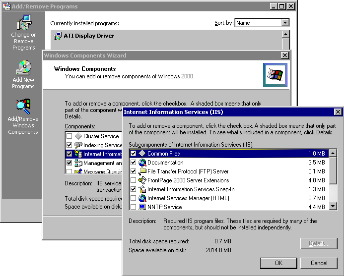
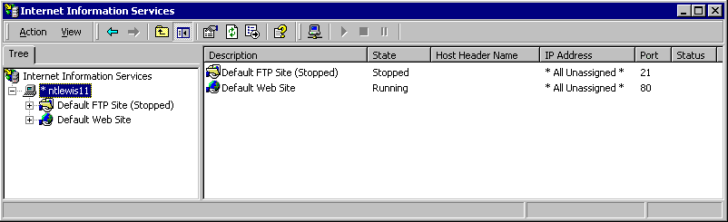
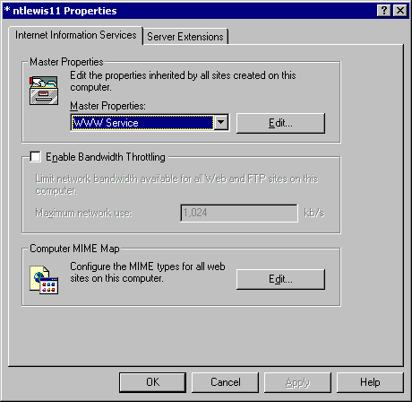
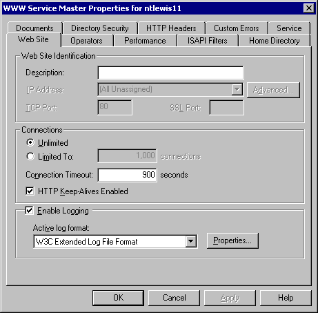
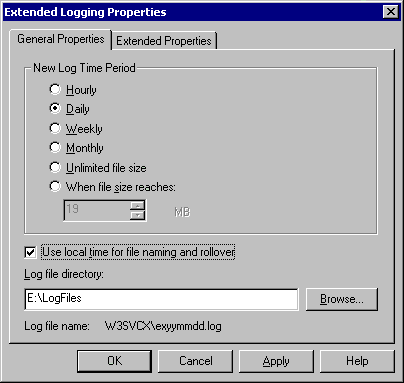
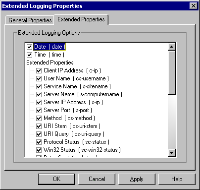
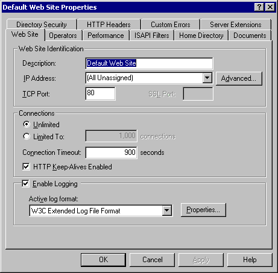

Copyright © 2002 by Christopher G. Lewis
Rights are given by the copyright holder to reproduce, distribute, modify, and
create derivative works of this document as long as the above original
copyright is not removed.
Originally written 2002-04-29. Last update 2002-05-17.
Analog is claimed as the most popular web logfile analyzer in the world. (Details). While originally written for unix systems, Analog has supported Win32 since version 1.9beta4 (Mar-1996) and has had native Win32 support since 2.0 (Feb-1997). Configuring IIS correctly greatly simplifies the use of Analog, and will allow for much better reporting.
This example was developed and tested using a default install of Windows 2000 server running IIS 5.0 with SP2 and all current security patches installed. It should be applicable to Windows NT 4.0 with IIS 4.0, and also the new Windows .NET servers which are currently in beta.
This sample assumes that Windows 2000 Server or Advanced Server is installed on the machine without IIS.
The basic method for installing IIS is to use the Add/Remove Programs control panel application, and to select Add/Remove Windows Components. Select the Internet Information Services (IIS) checkbox, and click the Details button. Check the appropriate check boxes for your installation needs.
|  |
There are some simple steps to configure IIS to ensure that Analog functions properly. I'll also include some of my suggestions for log file directories which simplifies the use of IIS, and moves the log files off of the system drive.
The default IIS configuration looks like this:

Your first step is to configure the web server logs to gather all the information that Analog will need.
Right click on the server (in this case NTLewis11) and select Properties to bring up the server Properties page.

Click the Edit button in the Master Properties frame.

Changes to make to this screen:
Make sure that you change the Active log Format to "W3C Extended Log File Format"
Click the Properties button in the Enable Logging frame.

Changes to make to this screen:
Make sure that the New Log Time Period is set to your desired rotation period. A typical setting would be for Daily rotation, although I imagine in a very high volume site, you might want to select hourly.
You can check the "Use local time for file naming and rollover" checkbox. This means that your log file rotation will occur at midnight local time rather than midnight GMT. Note that IIS will still log web hits using GMT time no matter what this check box is set to. To compensate for GMT time formatting, you will need a LOGTIMEOFFSET command before your LOGFILE command. Since this offset is independent of day light savings, you will need to change this twice a year in order to produce the correct times through Analog.
Change the Log File directory to something a little easier to find. On my default system installation (C: for System, D: for first CD-ROM, E: for first data disk), I always put my log files into E:\LogFiles, and then compress this folder using NTFS compression, since the log files compress relatively well.
Click on the Extended Properties tab.

Changes to make to this screen:
Make sure that both the Date and Time check boxes are checked. To simplify my installations, I check every Extended Property checkbox. There are some specific items that could probably not be included (such as Server Port for a port 80 only server), but additional items typically don't add much to the file size of the log files.
In a typical server installation, do not check the Process Accounting checkbox. At this time, I do not believe Analog will process those lines.
Make sure that the following are checked:
- Date
- Time
- Client IP Address
- User Name
- Server Name
- Server IP Address
- Method
- URI Stem
- URI Query
- Protocol Status
- Bytes Sent
- Bytes Received
- Time Taken
- User Agent
- Referrer
- Cookie
Note: By using W3C Extended format, your Analog.CFG file will not need a LOGFORMAT line
Configuring a single IIS web site to support Analog is similar to configuring the entire server. Right click on the web site you'd like to configure, and select Properties to bring up the web site Properties page.

Follow the above steps to configure the Active log format and the extended properties for your log files.
The basic analog.cfg file that I use has some slight changes to it to accommodate IIS. I've added a set of LOGTIMEOFFSET commands to deal with IIS's GMT logging (which need to be changed in October and April), and DNS commands for host resolution. I've also eliminated some specific files and directories for Exchange's Web Access and Front Page. Lines that I've added are in Red.
# Configuration file for analog 5.1 # See http://www.analog.cx/ # # Here are a couple of configuration commands to get you started. Add any more # you like from the Readme. # # Lines starting with # are comments. # # There is a much more extensive configuration file in examples/big.cfg # # If you need a LOGFORMAT command (most people don't -- try it without first!), # it must go here, above the LOGFILE commands. #LOGFILE logfile.log #CST (Winter) #LOGTIMEOFFSET -360 #CDT (Summer) LOGTIMEOFFSET -300 LOGFILE E:\LogFiles\W3SVC1\ex*.log HOSTNAME "ChristopherLewis.com" HOSTURL http://www.ChristopherLewis.com/ BROWOUTPUTALIAS IWENG AOL SUBBROW */* SUBTYPE *.gz,*.Z LANGUAGE US-ENGLISH # OSCHARTEXPAND Windows # Add whichever of these types of pages you have on your server, or others. # PAGEINCLUDE *.shtml # PAGEINCLUDE *.asp # PAGEINCLUDE *.jsp # PAGEINCLUDE *.cfm # PAGEINCLUDE *.pl # PAGEINCLUDE *.php SEARCHENGINE http://*altavista.*/* q SEARCHENGINE http://*yahoo.*/* p SEARCHENGINE http://*google.*/* q SEARCHENGINE http://*lycos.*/* query SEARCHENGINE http://*aol.*/* query SEARCHENGINE http://*excite.*/* search SEARCHENGINE http://*go2net.*/* general SEARCHENGINE http://*metacrawler.*/* general SEARCHENGINE http://*msn.*/* MT SEARCHENGINE http://*hotbot.com/* MT SEARCHENGINE http://*netscape.*/* search SEARCHENGINE http://*looksmart.*/* key SEARCHENGINE http://*infoseek.*/* qt SEARCHENGINE http://*webcrawler.*/* search,searchText SEARCHENGINE http://*goto.*/* Keywords SEARCHENGINE http://*snap.*/* keyword SEARCHENGINE http://*dogpile.*/* q SEARCHENGINE http://*askjeeves.*/* ask SEARCHENGINE http://*ask.*/* ask SEARCHENGINE http://*aj.*/* ask SEARCHENGINE http://*directhit.*/* qry SEARCHENGINE http://*alltheweb.*/* query SEARCHENGINE http://*northernlight.*/* qr SEARCHENGINE http://*nlsearch.*/* qr SEARCHENGINE http://*dmoz.*/* search SEARCHENGINE http://*newhoo.*/* search SEARCHENGINE http://*netfind.*/* query,search,s SEARCHENGINE http://*/netfind* query SEARCHENGINE http://*/pursuit query ROBOTINCLUDE REGEXPI:robot ROBOTINCLUDE REGEXPI:spider ROBOTINCLUDE REGEXPI:crawler ROBOTINCLUDE Googlebot* ROBOTINCLUDE Infoseek* ROBOTINCLUDE Scooter* ROBOTINCLUDE Slurp* ROBOTINCLUDE Ultraseek* TYPEALIAS .html ".html [Hypertext Markup Language]" TYPEALIAS .htm ".htm [Hypertext Markup Language]" TYPEALIAS .shtml ".shtml [Server-parsed HTML]" TYPEALIAS .ps ".ps [PostScript]" TYPEALIAS .gz ".gz [Gzip compressed files]" TYPEALIAS .tar.gz ".tar.gz [Compressed archives]" TYPEALIAS .jpg ".jpg [JPEG graphics]" TYPEALIAS .jpeg ".jpeg [JPEG graphics]" TYPEALIAS .gif ".gif [GIF graphics]" TYPEALIAS .png ".png [PNG graphics]" TYPEALIAS .txt ".txt [Plain text]" TYPEALIAS .cgi ".cgi [CGI scripts]" TYPEALIAS .pl ".pl [Perl scripts]" TYPEALIAS .css ".css [Cascading Style Sheets]" TYPEALIAS .class ".class [Java class files]" TYPEALIAS .pdf ".pdf [Adobe Portable Document Format]" TYPEALIAS .zip ".zip [Zip archives]" TYPEALIAS .hqx ".hqx [Macintosh BinHex files]" TYPEALIAS .exe ".exe [Executables]" TYPEALIAS .wav ".wav [WAV sound files]" TYPEALIAS .avi ".avi [AVI movies]" TYPEALIAS .arc ".arc [Compressed archives]" TYPEALIAS .mid ".mid [MIDI sound files]" TYPEALIAS .mp3 ".mp3 [MP3 sound files]" TYPEALIAS .doc ".doc [Microsoft Word document]" TYPEALIAS .rtf ".rtf [Rich Text Format]" TYPEALIAS .mov ".mov [Quick Time movie]" TYPEALIAS .mpg ".mpg [MPEG movie]" TYPEALIAS .mpeg ".mpeg [MPEG movie]" TYPEALIAS .asp ".asp [Active Server Pages]" TYPEALIAS .jsp ".jsp [Java Server Pages]" TYPEALIAS .cfm ".cfm [Cold Fusion]" TYPEALIAS .php ".php [PHP]" TYPEALIAS .js ".js [JavaScript code]" #DNS Stuff DNSFILE dnscache DNS WRITE #Exclude Exchange FILEEXCLUDE /Exchange FILEEXCLUDE /Exchange/* #Exclude Front Page stuff FILEEXCLUDE /_vti_bin/* FILEEXCLUDE /_derived/* FILEEXCLUDE /_themes/* FILEEXCLUDE /_vti_inf.html #minimum Requests for Daily reports... These are overridded by Analog_Run.vbs for Monthly REQFLOOR 1r ORGFLOOR 1r REFFLOOR 1r REFSITEFLOOR 1r HOSTFLOOR 1r
Hopefully, this will help you out with configuring IIS for use with Analog. For a VBScript that performs Daily, Weekly, and Monthly reporting, please see my web site at HTTP://www.ChristopherLewis.com.